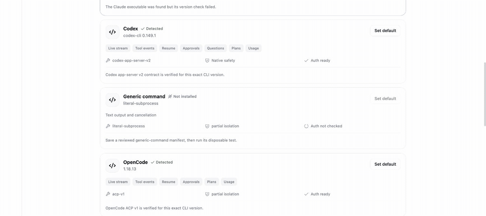

LOCAL AGENT CONTROL ROOM
Your workspace.
Your choice of agent.
One local place to run, inspect, approve, resume, and compare Claude Code, Codex, OpenCode, ACP agents, or a restricted command adapter—without pretending their capabilities are identical.
- 01
- Local-first
- 02
- Agent-aware
- 03
- Evidence-led
Codexapp-server v2 · ready
Fix the release badge and run its acceptance test. Keep changes inside the demo workspace.
Draft stays when the agent changesControls come from the selected adapter’s declared capabilities.
01 / THE POINT
Change the agent.
Keep the operating model.
SwiftAgent normalizes the workflow around a run—not the agent’s personality. Each adapter keeps its native protocol, authentication, session ID, model, and safety posture. The interface adds one durable timeline, one receipt format, and a deliberate way to hand reviewed context to another agent.
02 / CHOOSE AN ENTRY POINT
Agent-specific details.
Agent-neutral operating model.
Claude Code
Native session resume and tool evidence, with explicit unsupported controls.
Explore Claude Code → app-server v2Codex
Approvals, questions, plans, usage, and separate native safety evidence.
Explore Codex → ACP firstOpenCode
Negotiated structured features with a visibly reduced JSON fallback.
Explore OpenCode → Adapter API 1.0Any ACP agent
A strict local manifest, public contract kit, and no automatic download.
Connect an ACP agent →03 / ONE FOCUSED LOOP
Choose. Run. Review. Handoff.
- 01
Detect locally
See installed agents, versions, models, auth state, protocol, and readiness without making a model call.
- 02
Write once
Your draft and workspace stay put while you compare ready agents and capability-aware controls.
- 03
Review evidence
Tool events, approvals, questions, Git impact, safety layers, and verification live in one Local Run Receipt.
- 04
Handoff deliberately
Preview and redact bounded context before a different agent starts a new run. Native sessions never cross.
04 / LOCAL RUN RECEIPT
A shared record,
not a flattened story.
Every run stores common evidence and expandable native details. SwiftAgent records test status only when explicit evidence exists; an assistant saying “done” is not a passing test.
- Agent, adapter, protocol, model, and native session
- Normalized timeline with native event identity
- Git baseline, changed files, and bounded diff summary
- Native safety and SwiftAgent isolation shown separately
AgentCodex
Protocolapp-server v2
Workspacenorthstar-demo
Verificationpassed
09:41:02 run started
09:41:04 plan updated
09:41:07 approval requested → approved
09:41:13 1 file changed
09:41:16 verification recorded
05 / HONEST COMPATIBILITY
Same room.
Different instruments.
| Adapter | New run | Resume | Approvals | Plans | Usage | Transport |
|---|---|---|---|---|---|---|
| Claude Code | Verified | Verified | Not exposed | Not exposed | Not exposed | stream-json |
| Codex | Verified | Verified | Verified | Verified | Verified | app-server v2 |
| OpenCode | Verified | Verified | ACP mode | ACP mode | ACP mode | ACP / JSON fallback |
“Verified” refers to the repository’s pinned protocol fixtures and compatibility tests—not every live CLI version, model, provider, or operating system. The app shows the current local result.
06 / REPRODUCIBLE DEMO
One safe task.
Three isolated runs.
The Northstar fixture has no dependencies, credentials, or network calls. A reset command creates a clean nested Git repository for each agent, so edits and sessions never leak between comparisons.
make demo-prepare
make demo-verify
07 / SAFETY WITHOUT THEATER
Two layers.
Both visible.
Native agent approvals and sandbox controls belong to the adapter. SwiftAgent’s own process isolation is a separate layer. The receipt never combines them into a vague “safe” badge.
strict requires usable Linux bwrap and fails closed. fallback is an explicit trusted-machine choice with no OS isolation.
08 / FIRST RUN
Bring the agents you already use.
Authentication remains owned by each local CLI. SwiftAgent stores its control-plane data locally and does not ask you to paste provider credentials.
gh release download v0.6.0 --repo OthmaneBlial/swiftagent \
--pattern 'swiftagent-v0.6.0.tar.gz' --pattern 'SHA256SUMS'
shasum -a 256 -c SHA256SUMS --ignore-missing
tar -xzf swiftagent-v0.6.0.tar.gz
cd swiftagent-v0.6.0
make install-release
make start-releaseVerify the published GitHub attestation too, then open http://127.0.0.1:8000, inspect Your agents, and choose a dedicated workspace.
09 / OPT-IN EVIDENCE
Tell us where the workflow bends.
SwiftAgent uses no silent telemetry. Useful growth evidence is a redacted compatibility report or a clear account of installation, detection, first-run, review, or handoff friction—not a star counter.
10 / SMALL BY DESIGN
Agent-aware composer, execution timeline, receipts, handoffs, files, and settings.
REST, WebSocket events, lifecycle limits, readiness, and diagnostics.
Local task history, normalized events, receipts, and workspace change evidence.
Native protocols stay behind a versioned capability contract.